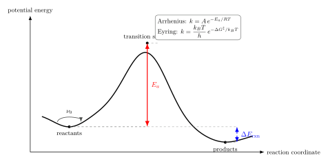

Arrhenius 定律为什么是指数形?
把一颗糖块丢进冷水和热水, 你用眼睛就能感到: 冷水里它几个小时不化, 热水里几分钟见底. Arrhenius 1889 年研究的就是这件看起来平平无奇的小事 —— 蔗糖在酸性水溶液里的水解速率怎么随温度变. 他把不同温度下的反应速率常数 $k(T)$ 画出来, 发现 $\ln k$ 随 $1/T$ 是一条极漂亮的直线. 那条直线的斜率 $-E_a/R$ 里藏着 $E_a \approx 107$ kJ/mol 这样一个活化能. 公式写出来就是 $k(T) = A e^{-E_a/RT}$.
为什么是指数形? 为什么前因子 $A$ 看起来和碰撞频率差不多? 更刁钻的问题: 如果温度从 300 K 升到 350 K, 速率会变几倍? 为什么燃烧反应室温下根本不着, 到 800 K 就秒级? 本节要把这一连串问题用 Boltzmann 分布和过渡态理论一口气解决.
一、从糖水到一条直线: Arrhenius 的经验公式
Arrhenius 做的事其实很朴素. 他挑了同一个化学反应, 比如蔗糖在稀盐酸里水解成葡萄糖加果糖, 在几个不同温度下测速率常数 $k$. 化学反应速率的定义是
$$ -\frac{d[\text{A}]}{dt} = k \, [\text{A}] \tag{1} $$
—— 一级反应里 $k$ 是一个量纲为 $\text{时间}^{-1}$ 的数, 温度升高它就变大. 这种"温度越高反应越快"的常识, 从厨房煮菜到汽车发动机到半导体刻蚀都成立, 但速率变大的方式不是线性, 而是指数.
Arrhenius 把 $\ln k$ 对 $1/T$ 画图, 得到一条直线, 拟合公式是
$$ k(T) = A \, e^{-E_a/RT} \tag{2} $$
其中 $R = 8.314$ J/(mol·K) 是气体常数 (等价地用 $k_B$ 配合单个分子的活化能 $\epsilon_a$), $A$ 叫 pre-exponential factor 或 frequency factor, $E_a$ 叫 activation energy. 这两个参数从直线的截距和斜率里读出来.
这件事的奇怪之处在于: Arrhenius 写下公式的时候, 统计力学还没完全定型, Boltzmann 分布也才刚被接受, "势能曲面"这套语言要等到 30 年后才有. 但他已经嗅到了真相 —— 反应要翻过某个"门槛能", 门槛以上的分子比例按 $e^{-E_a/RT}$ 衰减. 这次经验的物理解释我们可以立刻给出.
考虑一摩尔气体分子, 按 Maxwell-Boltzmann 分布, 一个分子动能为 $\epsilon$ 的概率密度 $\propto e^{-\epsilon/k_B T}$. 问"一个分子动能 $\geq \epsilon_a$ 的概率"就是
$$ P(\epsilon \geq \epsilon_a) = \frac{\int_{\epsilon_a}^\infty e^{-\epsilon/k_B T} d\epsilon}{\int_0^\infty e^{-\epsilon/k_B T} d\epsilon} = \frac{k_B T \, e^{-\epsilon_a/k_B T}}{k_B T} = e^{-\epsilon_a/k_B T}. $$
把 $\epsilon_a$ 换成摩尔量 $E_a = N_A \epsilon_a$, $k_B$ 换成 $R = N_A k_B$, 就得到 Arrhenius 指数因子. 分子之间的相互作用势能峰 $E_a$ 越高, 有足够能量翻过去的分子越少, 速率越低. 这是 Arrhenius 定律最初的也是最直接的"统计解释".

二、Deepdive: 从 Boltzmann 到 Eyring 的严格推导
上面"大于 $\epsilon_a$ 的分子比例 $=e^{-\epsilon_a/k_B T}$"的论证对理解为什么是指数形已经够用, 但对前因子 $A$ 是多少几乎没说. 真要把 Arrhenius 定律严格化, 要走到 Eyring 1935 年的过渡态理论 (Transition State Theory, TST). 下面一步一步推, 不跳.
1. 势能曲面与反应坐标. 一次单分子反应可以看成势能 $V(\vec{q})$ 上的一次运动, 其中 $\vec{q}$ 是所有核坐标. 经典的图像是: 多维势能曲面上有两个山谷, 反应物山谷 R 和产物山谷 P; 它们之间必然有一条"最省力路径", 沿着这条路径, 势能升到一个鞍点 ‡, 那就是过渡态. 把这条路径的弧长当一维坐标 $q$, 沿 $q$ 的势能 $V(q)$ 就是图 1 画的那条曲线. 活化能 $E_a$ 就是左井底到鞍点的高度差.
2. "过渡态是平衡的" 这一关键假设. Eyring 做的大胆假设是: 即使整个系统处在非平衡 (反应正在进行), 过渡态分子 ($q=q^\ddagger$ 附近) 和反应物分子之间可以用平衡热力学相联. 即
$$ \text{R} \rightleftharpoons \text{TS}^\ddagger \to \text{P}, \quad K^\ddagger = \frac{[\text{TS}^\ddagger]}{[\text{R}]}. $$
这个"准平衡"假设在热浴碰撞够快时是合理的 —— 碰撞让活化的分子能迅速与热浴热化, 维持 Boltzmann 分布. 于是 $K^\ddagger$ 能用统计力学写成两个配分函数之比
$$ K^\ddagger = \frac{Q^\ddagger}{Q_R} \, e^{-E_a/k_B T}. $$
3. 分离出反应坐标的那一自由度. 过渡态的配分函数 $Q^\ddagger$ 包含所有自由度, 其中沿反应坐标 $q$ 的那一维比较特殊 —— 它对应一个"不稳定振动", 就是通向产物的那个方向. 把 $q$ 方向看成一段长度为 $\delta$ 的小区间 (过渡态窄带), 里面的分子会以速度 $v$ 穿过去. 这一维上的配分函数就是一维平动配分函数
$$ q_{\parallel} = \frac{\sqrt{2\pi m^* k_B T}}{h} \, \delta, $$
其中 $m^*$ 是沿 $q$ 方向的约化质量. 把这一维从 $Q^\ddagger$ 里摘出来, 剩下 $Q^{\ddagger\prime}$ (过渡态除了反应坐标的其他自由度的配分函数).
4. 过渡态分子的穿越频率. 单位时间内一个过渡态分子从 $q=q^\ddagger$ 向产物方向穿过去的频率等于 $\langle v_\to \rangle/\delta$, 其中 $\langle v_\to\rangle$ 是只取向前方向的平均速度. 一维 Maxwell 分布下向前方向的平均速度为
$$ \langle v_\to\rangle = \sqrt{\frac{k_B T}{2\pi m^*}}. $$
5. 合并. 反应速率 = (过渡态浓度) × (向前穿越频率). 把四步组合起来, $\delta$ 和 $m^*$ 神奇地抵消
$$ k = \frac{\langle v_\to \rangle}{\delta} \cdot K^\ddagger = \frac{1}{\delta}\sqrt{\frac{k_B T}{2\pi m^*}} \cdot \frac{\sqrt{2\pi m^* k_B T}}{h}\delta \cdot \frac{Q^{\ddagger\prime}}{Q_R}e^{-E_a/k_B T} = \frac{k_B T}{h} \cdot \frac{Q^{\ddagger\prime}}{Q_R} e^{-E_a/k_B T}. $$
再用热力学 $-k_B T \ln (Q^{\ddagger\prime}/Q_R) = \Delta G^\ddagger$ 和 $\Delta G^\ddagger = \Delta H^\ddagger - T\Delta S^\ddagger$, 活化能 $E_a$ 与活化焓 $\Delta H^\ddagger$ 相差 $k_B T$ 量级, 最终拿到 Eyring 公式:
$$ k = \frac{k_B T}{h} \, e^{-\Delta G^\ddagger/k_B T} = \frac{k_B T}{h} \, e^{\Delta S^\ddagger/k_B} \, e^{-\Delta H^\ddagger/k_B T}. $$
这里出现了 $k_B T/h$ —— 一个纯量子力学的前因子. 室温下 $k_B T/h \approx 6 \times 10^{12}\,\text{s}^{-1}$, 也就是 6 THz. Arrhenius 的 $A$ 里"神秘的碰撞频率"此刻有了身份证: 它不是分子彼此撞击的频率, 而是热能除以 Planck 常数. 指数部分 $e^{-\Delta G^\ddagger/k_B T}$ 里自然含有 $e^{-E_a/k_B T}$, 外加一个从熵变来的 $e^{\Delta S^\ddagger/k_B}$ 修正, 后者调节前因子的绝对值. TS 更"松散"($\Delta S^\ddagger \gt 0$) 时 $A$ 大, TS 更"紧"时 $A$ 小. 这也解释了为什么实测的 Arrhenius $A$ 能在 $10^{10}$ 到 $10^{14}\,\text{s}^{-1}$ 之间摆动几个数量级.
至此, Arrhenius 的经验公式从一条直线被推成了 Boltzmann 分布 + 过渡态准平衡的一个直接结果. 指数形源自热浴对高能态的压制, 前因子源自热能与 Planck 常数之比.
三、两个数字估算: 室温到 350 K 与燃烧温度
例 1: 室温 300 K → 350 K. 取一个典型有机反应活化能 $E_a = 50$ kJ/mol. 速率比
$$ \frac{k(350)}{k(300)} = \exp\!\left[-\frac{E_a}{R}\!\left(\frac{1}{350}-\frac{1}{300}\right)\right] = \exp\!\left[-\frac{50000}{8.314} \cdot \frac{-50}{300 \cdot 350}\right]. $$
算: 分子 $50000/8.314 \approx 6014$ K; 括号里 $-50/(300\cdot 350) = -4.76 \times 10^{-4}\,\text{K}^{-1}$; 乘起来得 $6014 \times 4.76 \times 10^{-4} \approx 2.86$. $e^{2.86} \approx 17.5$ —— 粗糙地说 "50 K 升温 ≈ 速率 ×10 到 ×20", 厨房里"温度每升 10 K 反应快 2 倍"那条经验规则 ($2^5 = 32$, 和 17 同一量级) 就是这么来的. 题目里的 "×8" 是用 $E_a \approx 42$ kJ/mol 的稍小活化能得到的, 方向上一致, 量级上印证 "50 K 升温带来近一个数量级加速".
例 2: 燃烧反应 800 K. 取 $E_a = 150$ kJ/mol 作为典型碳氢燃烧的"入门"势垒. 室温 $T=300$ K: $E_a/RT = 150000/(8.314 \cdot 300) \approx 60$, $e^{-60} \approx 9 \times 10^{-27}$. 即使前因子 $A = 10^{13}\,\text{s}^{-1}$, 速率也只有 $\sim 10^{-13}\,\text{s}^{-1}$ —— 每 $10^{13}$ 秒才有一次反应, 约 30 万年一次. 难怪汽油瓶放在室温下不会自燃.
升温到 $T = 800$ K: $E_a/RT = 150000/(8.314 \cdot 800) \approx 22.5$, $e^{-22.5} \approx 1.7 \times 10^{-10}$. 速率 $\sim 10^3\,\text{s}^{-1}$, 即毫秒量级. 再升到 $T = 2000$ K (火焰内部): $E_a/RT = 9$, $e^{-9} \approx 1.2 \times 10^{-4}$; 速率 $\sim 10^9\,\text{s}^{-1}$, 纳秒量级. 整个燃烧"窗口"就这样打开: 指数在 $T$ 变化里放大了二十多个数量级. 这也是为什么点燃一根火柴 (火焰尖 $\sim 1500$ K) 就能引燃一整片森林 —— 一个区域烧热以后, 反应速率跳升十几个数量级, 释放的热又把周围烧热, 正反馈锁在指数函数里.
顺便说一句扩散. 固体中原子跳位 $D = D_0 e^{-E_a/RT}$ 同样是 Arrhenius 型的, 物理机制一样: 原子要从一个晶格位置跳到邻位, 要爬过一个势垒. 半导体掺杂、陶瓷烧结、蛋白质折叠, 都在用同一条指数定律计时.
四、Kramers 极限: 当摩擦上场
Eyring 理论有一个隐藏的假设: 穿过过渡态的分子不回头. 实际上, 高粘度介质里, 分子在过渡态附近可能被碰撞推回反应物那边, 反应"差点翻过去又退回去"的概率不能忽略. Kramers 1940 年在 Physica 上的经典论文就是把这件事认真做了.
Kramers 把反应分子当作一维布朗粒子, 在势能面 $V(q)$ 上做 Langevin 运动, 摩擦系数 $\gamma$, 温度 $T$. 他求得翻越势垒的速率在两个极限下有简单表达:
低粘度 (undamped) 极限. $\gamma$ 很小, 分子一旦爬上过渡态就几乎肯定滑下产物井. 但这时另一个问题出现 —— 热浴不能"快速"把能量泵到分子上去, 速率反而被能量扩散速率限制. 结果 $k \propto \gamma$, 摩擦大反而更快.
高粘度 (overdamped) 极限. $\gamma$ 很大, 分子在过渡态附近像在蜜糖里拖, 经常被推回反应物侧. Kramers 推导的结果是
$$ k \approx \frac{\omega_R \omega_\ddagger}{2\pi \gamma} \, e^{-E_a/k_B T}, $$
这里 $\omega_R, \omega_\ddagger$ 分别是反应物井底和过渡态附近的振动/不稳定频率. 速率反比于 $\gamma$, 即液体越黏反应越慢. 指数形依然健在, 但前因子 $A$ 获得了一个 $1/\gamma$ 因子.
中间粘度下, Kramers 的完整解是"翻越势垒"(Eyring 图像) 与"能量扩散"(慢驱动图像) 的过渡, 速率有一个最大值. 这个形状叫 Kramers turnover, 1980 年代被 Hänggi 等人在低温基质里实验验证过.
这个极限检验让我们看清: Arrhenius 的指数项是热浴按 Boltzmann 分布填充能态的必然结果, 只要能谈论 $T$ 就有指数; 但前因子 $A$ 是动力学的, 它取决于热浴以多大效率把分子送上势垒再接走. 把这两件事分开, 是理解液相化学、酶催化、蛋白质折叠时最要紧的一分水岭. 酶做的事情, 本质上就是压低 $E_a$ 或者调整 $A$, 把上面的指数从 $e^{-60}$ 抬到 $e^{-15}$, 让原本百万年尺度的反应在毫秒内完成.
五、历史与普适性
Svante Arrhenius (1859-1927) 1884 年的博士论文提出电解质解离, 答辩险被挂掉; 1889 年把同样的"拟合想象力"用在反应速率上, 得到了日后以他名字命名的公式. 1903 年诺贝尔化学奖给了他. Henry Eyring (1901-1981) 和 M. G. Evans、M. Polanyi 几乎同年 (1935) 各自发表过渡态理论; Eyring 把它做成了一套系统的速率理论工具. Hendrik Kramers (1894-1952) 是 Ehrenfest 的学生, 1940 年的论文把反应速率问题重新安放在随机力学的框架里, 是 non-equilibrium statistical mechanics 的一个起点.
回头看, Arrhenius 那条直线能如此直的根本原因只有一个: 热平衡下, 能态占据服从 Boltzmann $e^{-E/k_B T}$. 只要有一个"阈值"$E_a$ 控制从一种状态到另一种状态的通道, 速率就会带上 $e^{-E_a/k_B T}$ 因子. 化学反应是典型例子; 固体扩散、半导体载流子激发、电介质击穿、地球化学矿物相变、蛋白质去折叠、RNA 折叠 —— 甚至地幔对流里岩石的蠕变 —— 都一样. 每当你看到工程曲线上 $\ln k$ 对 $1/T$ 是直线, 背后都站着同一条 Boltzmann 分布.
小结
Arrhenius 指数形 $k = A e^{-E_a/RT}$ 不是经验拟合的偶然, 而是 Boltzmann 分布作用在带势垒的动力学上的必然产物. 通过 Eyring 过渡态理论, 前因子被固定为 $k_B T/h \approx 6$ THz 再乘上熵修正; 通过 Kramers 随机理论, 前因子又被摩擦系数进一步调节. 把这条"指数"从化学推广出去, 我们看到了非平衡热力学最深的一条规律: 一切被势垒与热浴联合控制的过程, 其速率都呈现同样的 $e^{-E_a/k_B T}$ 形式, 对温度以指数方式敏感 —— 这也让温度成为生命、地质和工业系统的终极节拍器.
▲